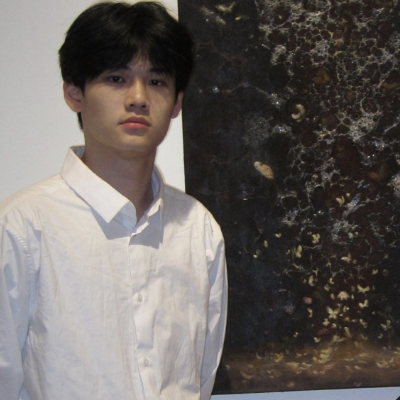

Godot Vibe Plugin
Prompt-driven assets and scene automation inside Godot, with structured plans and a shared image-provider pipeline.
Building toward 2027 new grad
I’m Steve, a software engineer building backend systems, AI developer tools, and the native code underneath them.

Computer Science & EngineeringThe Ohio State University · May 2027
Google Summer of Code ’26Python Software Foundation · pocketpy
Contributing where it countsAccepted upstream runtime changes
From intern to new gradBackend · AI tooling · Native systems
01 / Selected work
Tools, systems, and the decisions
that make them work.
Prompt-driven assets and scene automation inside Godot, with structured plans and a shared image-provider pipeline.
Cube-body physics for a wrap-around world. Collision queries, contact debugging, and the details between motion and stability.
A deterministic policy gate for structured tool plans, with audit trails and adversarial replay cases. Inspect its recorded decisions in the companion lab.
A Java-based agent that combines retrieved context with external tool calls, connecting a React interface to a Spring backend.
The small changes matter, too.
Focused contributions to an existing interpreter.
Real changes, reviewed and merged upstream.
02 / Experience
Open source, startup integrations,
industrial vision, and commerce.
Built the Godot Vibe Plugin for asset generation, image editing, and scene automation. Developed a schema-based planning workflow and a shared provider interface; contributed standard-library features and numeric serialization fixes to pocketpy.
Explore the work →Built tenant-aware OAuth integrations with dynamic redirects and token refresh. Worked on Spring Boot routing, batched downstream API calls, and idempotent webhooks with backoff retries for operator preview and approval workflows.
Read the case study →Worked on a hardware-in-the-loop inspection service using YOLOv5 and Flask. Applied post-training quantization for edge inference, decoupled media ingestion through AWS S3, and tested REST and storage paths with PyTest.
Improved PostgreSQL access patterns with schema normalization and covering indexes, supported by Redis cache-aside. Hardened Stripe payment retries with idempotency keys and transactional writes, with GitHub Actions checks ahead of Docker deployments.
What’s next / Class of 2027
I’m looking for 2027 new-grad software engineering opportunities,
especially in backend systems and AI developer tools.